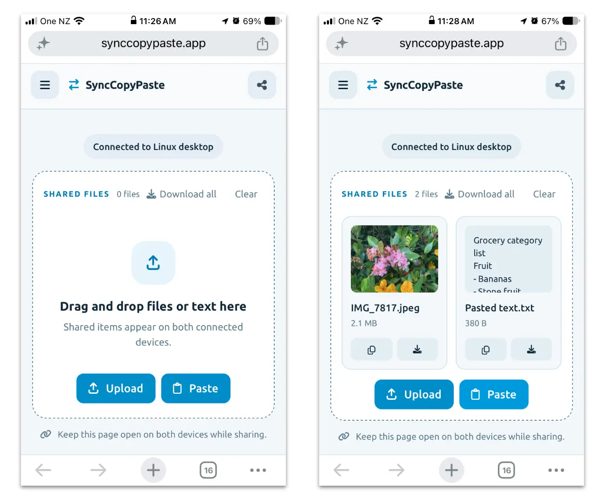

How to copy-paste anything between Apple and Android
Need a link from your iPhone on your Android tablet, or a photo from Android on your Mac? SyncCopyPaste makes it easy to move text, images and files between them in your browser.
Open SyncCopyPaste on both devices and connect them with the QR code or private link. Add copied text or an image with Paste, or choose a file with Upload. On the other device, use the item’s Copy or Download button.
Connect your devices
- Open SyncCopyPaste on your Apple or Android device.
- On the other device, scan the QR code shown on the first device, or open its private connection link. You can also enter the room code and passcode manually.
- Wait until both devices show that they are connected. Keep both pages open while you share.

Keep the connection link and passcode private: anyone with the link can attempt to join your room.
Copy text, links, images, or any other file
- Copy the text, link or image on the sending device.
- In SyncCopyPaste, tap or click Paste under Shared files.
- On the receiving device, select Copy, Download or Open.

The Paste button reads supported clipboard content, including plain text and PNG images. Clipboard access and copying support depend on your browser. If Paste is unavailable, save the content as a file and use Upload instead; if Copy fails, use Download.
Send a photo, video or other file
Choose Upload and select the file on the sending device. When it appears on the other device, choose Download to save it. On iPhone or iPad, downloading an image may open the share sheet, where you can save it to Photos or Files. You can also drag and drop files into Shared files on devices that support it.
Frequently asked questions
Does this work between iPhone and Android, or Mac and Android?
Yes. SyncCopyPaste works in a browser across iPhone, iPad, Mac and Android, as well as Windows and Linux. The steps work in either direction.
Will my clipboards automatically stay in sync?
Not by default. An optional beta feature can sync supported clipboard content on some devices and browsers after you enable Beta features under “How this app works” and grant clipboard access. Automatic clipboard sync is unavailable on iPhone and iPad; use the manual sharing steps instead.
Do I need an account or an app?
No. SyncCopyPaste is free and runs in your browser, with no account or installation required. Both devices need an internet connection to connect.